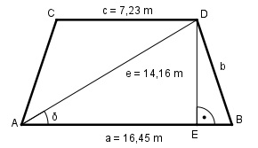

Aufgabe 152 Wie groß sind die Fläche A und die Seite b des gleichschenkligen Trapezes?

a - c 16,45 m – 7,23 m EB = ------- = ------------------- = 4,6 m 2 2 Im Dreieck AED: AE = a – EB = 16,45 m – 4,6 m = 11,85 m AE 11,85 m cos δ = ----- = ---------- = 0,8369 --> δ = 33,2° e 14,16 m h sin 33,2° = --- |*e e h = e * sin 33,2° = 14,16 m * 0,5476 = 7,8 m a + c A = ------- * h = 2 16,45 m + 7,23 m = -------------------- * 7,8 m = 92,4 m2 2 Im Dreieck ABD: Fall SWS: Cosinussatz: b2 = a2 + e2 - 2 * a * e * cos 33,2° b2 = 16,452 + 14,162 - 2*16,45*14,16*0,8368 = 81,3 b2 = 81,3 |√ b = 9 m